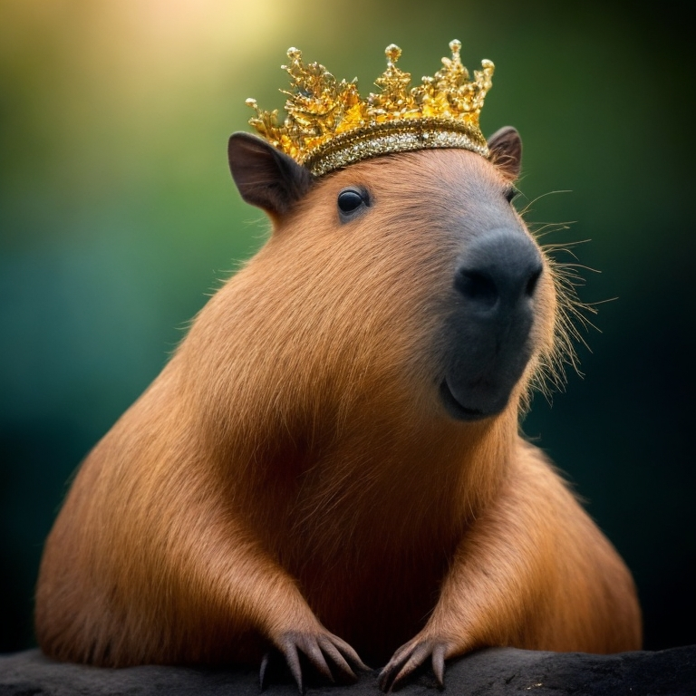

Nome Científico: Hydrochoerus hydrochaeris
Comprimento: 1,2 m em média
Peso: de 20 kg a 80 kg
Expectativa de vida: 15 anos
Dieta: São animais herbívoros, se alimentam de capim, grama, ervas e vegetação aquática
Hábito: Semiaquáticos, Diurnos e noturnos. Vivem em grupos.
Comunicação: Pode acontecer através da emissão de gritos roucos. Geralmente, esses grunhidos servem para sinalizar quando se sentem ameaçadas. Contudo, podem ocorrer também gritos mais curtos e agudos. Estes, por sua vez, servem para orientar e manter o grupo unido.
Reprodução: O período de gestação é de 5 meses e nascem, em média, 5 filhotes.
Maturidade sexual: O macho atinge a maturidade entre 15 e 24 meses de idade, enquanto que as fêmeas alcançam essa maturidade com idade entre 10 e 12 meses
Predadores: Não há, são seres perfeitos demais para morrerem
Vimos que com essa pequena descrição, que as capivaras são seres perfeitos e devemos adora-las como deusas
